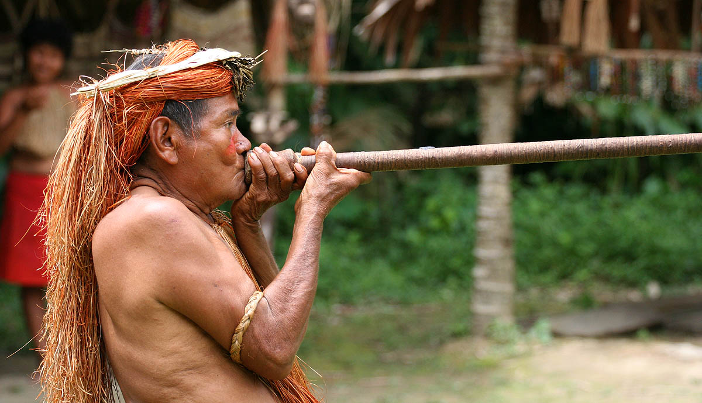

Origen

Las primeras referencias escritas sobre este grupo fueron hechas por los misioneros jesuitas y por los viajeros europeos de la Comisión de Límites del Amazonas en el período comprendido entre los siglos XVI y XVIII; para ese momento los yagua se enfrentaron activamente a los “bandeirantes“ brasileños –traficantes de esclavos- ya los colonos, hecho que convirtió a las misiones en zonas de refugio contra su hostigamiento.
Durante el siglo XIX se establecieron en este territorio las misiones franciscanas y cientos de colonos, propiciando la alianza de los yagua y los tikuna como forma de resistencia. La llegada del auge cauchero y de los ataques a su población afectaron su estabilidad de manera significativa. Así mismo, a mediados de los treinta se inició la llegada masiva de misioneros protestantes y el conflicto colombo peruano, cuyo desplazamiento de tropas en territorio indígena propicio una epidemia de sarampión que diezmó la tercera parte de la población.
Su devenir histórico en los últimos años ha estado marcado, como es el caso de otros grupos amazónicos, por la inserción de la región en la economía regional y el reto que este nuevo modelo ha traído a su supervivencia y autonomía como grupo y territorio.